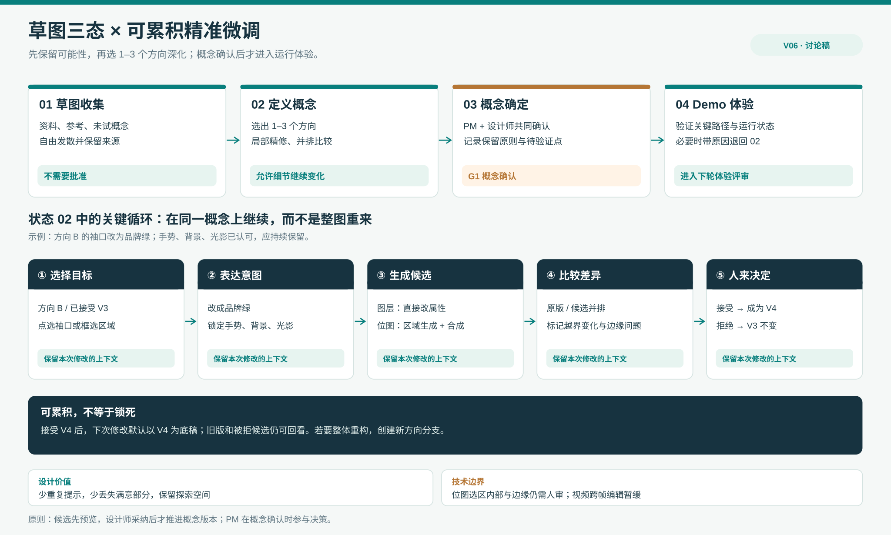

草图三态与可累积精准微调｜Design Agent 方案修订 V06
2026-10-04 · 与用户共创中的讨论稿。修正 V05 共创方案：草图阶段不应过早确定单一方向。这里区分灵感收集、选出 1–3 个值得深化的概念、确认进入 Demo 的概念。用户亲自体验 Lovart 后指出的“反复写提示词、重新生图、已满意部分被改坏”是本轮的首要问题陈述；尚未测量其发生频率。
新的主判断
草图阶段的目标不是尽快把材料变成一张“完成稿”，而是让团队能保留可能性、低成本试错、逐步形成可解释的选择。AI 最有价值的环节可能不是再生成十个方向，而是在一个看好的方向里精准改变一处、继续沿用已经认可的部分。
因此，V05 的「锚定式共创提案」在草图阶段应收窄成一个可验证的 Feature：可累积精准微调。每次修改都绑定原始概念、目标对象/区域、要保留的约束和上一版已接受结果；AI 先提供候选，设计师决定是否接续到同一个概念。它和“画笔圈选后再生成一次”的区别是上下文继承、范围控制、结果校验和连续版本。

1. 草图阶段应有三个状态，而不是一个“审批关卡”
| 状态 | 主要对象 | 团队与 AI 怎样工作 | 离开该状态的条件 |
|---|---|---|---|
| ① 草图收集 | PRD 片段、用户洞察、参考、手绘、未试过的概念、AI 生成物 | 设计师、PM、团队自由放入材料；AI 帮助分类、关联、补反例、提示冲突。允许不完整、相互矛盾和多个风格共存。 | 不需要“批准”；只要出现值得细化的方向，就可复制到概念定义区，原始灵感仍保留。 |
| ② 草图定义概念 | 1–3 个候选方向，各自有目标、亮点、约束、未解决问题与演化历史 | PM 与设计师并排比较，在原概念上做局部微调，记录“保留什么 / 改什么 / 为什么”。开发仅在接口、跨端、性能、权限等明显风险出现时提前预检。 | 对每个方向形成足以讨论的流程与关键画面；选择一个主方向，也可保留备选。这里是收敛，不是最终确认。 |
| ③ 草图概念确定 | 被选中的主方向、被拒绝/暂存方向、决策理由、仍可变化的细节 | PM 与设计师共同确认核心用户路径、价值主张、视觉/交互原则；标注哪些是“已确定约束”，哪些细节留给 Demo 验证。 | G1 概念确认后进入 Demo；如 Demo 暴露根本性问题，可带着原因返回②，而非覆盖原决定。 |
与 V05 相比，G1 从“思维发散结束就确认方向”后移到状态③。状态②只是 1–3 个方向的“入围”，细节仍可变化；状态③才形成可追踪的概念基线，随后检查运行体验。PM 的参与不等于每个草图都需审批，而是在状态②持续比较、状态③正式共同确认。
2. 你在 Lovart 体验里指出的真实摩擦
反复写提示词时，设计师其实在表达一个很窄的意图，例如“只把这只手的袖口改成绿色，其他姿势、光影和背景保持不变”。如果系统只记录新提示词和一张新图片，就容易出现四类损耗：
- 目标漂移：用户改袖口，AI 连手势或材质也改了。
- 上下文重述：下次修改还要重新说明此前接受的风格、比例和禁改区域。
- 局部结果不可累积：得到一个不错的候选后，下一轮又从旧图片或整页重生。
- 结果难审：没有清楚提示“哪些像素/对象变化是预期的，哪些是额外变化”。
这是用户个人体验加产品机制分析，不代表 Lovart 没有局部编辑。相反，Lovart 官方文档已描述 Quick Edit、Mark/Touch Edit、拆分元素和文字编辑；Photoshop 官方文档也支持选择区域后非破坏性生成。可见“选区+提示词”已是市场基础能力。本题更值得深入的是把多次微调组织成一个稳定的概念演化链。
3. 核心 Feature：可累积精准微调
交互：先选目标，再决定修改方法
- 选中概念与目标：设计师在方向 B 的原图里点选对象、框选区域或直接选一层；系统显示“正在编辑：方向 B / 第 3 版 / 左手袖口”。
- 设定意图与锁定项：默认保留未选区域，用户可锁“姿势、背景、光影、品牌色”；修改可用参数（颜色/文字/位置）或一句短指令表达。
- 系统选择路径并告知范围：如果源文件有可编辑图层，优先做确定性属性修改；纯位图则使用区域生成与合成。若要求“重做整体构图”，系统明确提示这是新方向分支，不伪称局部调整。
- 候选与范围校验：原版和候选并排，目标区域高亮；非目标区域的意外变化单独标注。设计师可以接受、继续限定或放弃。
- 接续当前概念：接受后形成方向 B 的下一版本；再次微调默认从这个已接受版本开始。原版和每次候选可回看，未接受候选不会覆盖主线。
示例：一组 AI 生成的手部素材已基本满意，只需把其中一只手的袖口改为品牌绿。设计师选择袖口、指定颜色并锁定手势与背景；系统生成局部候选，检查边缘和非目标变化；接受后继续修改同一概念的手环，而不是重写一段全图提示词。
同一入口，按材料类型选不同执行方法
| 材料 | 优先编辑方法 | 当前建议范围 | 必须坦诚的边界 |
|---|---|---|---|
| 可编辑图层 / 文本 / 向量 | 直接改文字、颜色、尺寸、位置与对象关系 | MVP | 仅当源结构真实存在时才保证属性级精确；AI 拆分图层可能识别错误。 |
| 扁平位图 | 对象选择/区域遮罩 → 局部生成 → 与未选区域合成 | MVP | 非选区像素可保持原样；选区里的形状、纹理、阴影和边缘仍可能失败。必要时扩大边界并明确提醒。 |
| HTML UI Demo | 绑定页面/状态/断点/组件 → 修改源码候选 → 运行对比 | 与 V05 Demo 功能衔接 | DOM 到源码定位、共享样式影响与真实交互回归不能靠截图保证。 |
| 视频 | 时间片段 + 对象跟踪 + 跨帧一致性编辑 | 后续探索 | 遮罩传播、运动和时序稳定性成本高，不与图像编辑同时承诺。 |
“所有格式都能在云端管理”可以先通过产物关系和来源链接做到；“所有格式都能用一套模型精准原位编辑”不现实。界面可以统一 目标 → 意图 → 候选 → 比较 → 接受，底层按对象类型调用不同编辑能力。
4. 这会怎样改变工作区与评审
草图收集区像可扩展画布，允许大量未整理的资料。概念定义区最多展示 1–3 个方向容器，每个容器保留自己的版本、锁定项、待解决问题和团队评论。概念确定区不是再复制一张图片，而是对被选方向形成决策卡：选择原因、保留原则、允许变动的细节和进入 Demo 的条件。
PM 可在方向容器中标注“信息层级不够清楚”；AI 形成针对该对象的候选，设计师选择是否接受。开发在需要时标注“这段交互依赖未规划的实时接口”。当概念确定，评审决策与已接受版本一起带入 Demo，Agent 不需要用户重新描述完整背景。
5. MVP 的成功标准与验证方法
用同一设计任务比较当前“整图重生/反复提示”与拟议的“选区+锁定+累积版本”。邀请 5–8 位设计师完成连续三次局部修改，再由 PM 判断是否能读懂 1–3 个方向的差异。记录：
- 完成一次被接受的局部修改需要多少轮；
- 非目标区域变化被发现/被接受的情况；
- 用户是否需要重复输入已确定的风格或约束；
- 第三次修改是否正确基于第二次已接受版本；
- PM 能否说出概念③的确认理由与未解决问题。
样本量和指标是发现性研究计划，不是性能承诺。技术验证另用一组可编辑图层与一组扁平位图：检查遮罩边缘、文字抽取、非目标区像素一致性、版本回退和多轮累积后的质量衰减。
下一步建议
下一版界面不要先画一个塞满工具的无限画布；先画 方向 B 的概念容器 → 选袖口并锁手势/背景 → 候选比较 → 接受为下一版 → PM 查看演化与确认概念 这一条可点击路径。它同时回答“草图不早收敛”和“局部修改不重做全图”两个问题。
来源：Lovart Advanced AI Editing、Lovart Move Object、Photoshop Generative Fill、Canva Magic Edit；均为官方能力说明，不等于本方案效果已被验证。